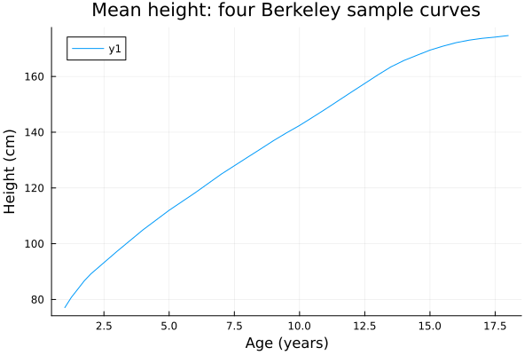
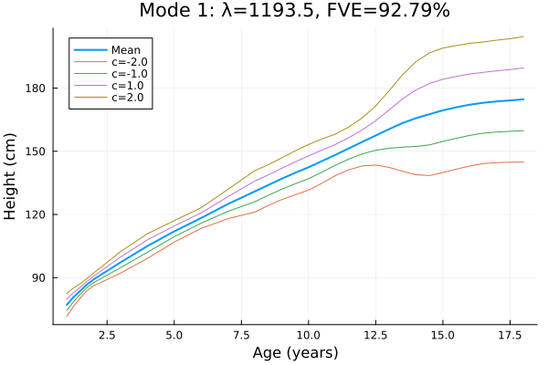

Datasets
datasets() lists six classic datasets. load_dataset(name) returns (; data, covariates, description, source, license). Covariates are a Tables.jl column table with one row per curve. Its unique string id column equals ids(data) in the same order. source records the R package and version, source object, archive URL and SHA-256, citation, transformations, units, component order, and original row indices. Every call returns fresh arrays.
Full data use a single lazy Julia artifact. Importing the package and listing datasets do not download it; the first full load_dataset call downloads it from the repository's datasets-v1 release. Use sample=true for the committed offline subsets. These subsets use the same exporter and loader as the full data. The examples below always use the samples, so this page builds without the artifact or a network connection.
| Name | Full data | Covariates and units |
|---|---|---|
:growth | 93 curves × 31 uneven ages | 39 boys followed by 54 girls; height in cm, age in years; sex labels |
:canadian_weather | 35 stations × 365 days × 2 nodes | Temperature in degrees C, then precipitation in mm; place, province, latitude, west longitude, region, geographic index |
:gait | 39 boys × 20 times × 2 nodes | Hip then knee angle in degrees; standardized cycle times 0.025, 0.075, …, 0.975; native boy IDs |
:tecator | 215 curves × 100 wavelengths | Absorbance spectra on 850–1050 nm; Fat, Water, Protein percentages |
:cd4 | 366 subjects; 1,888 observed counts | Irregular data; months −18 through 42 since seroconversion |
:dti | 382 scans from 142 subjects; 2 nodes | cca: 93 points; rcst: 55 points; fractional anisotropy, scan and subject covariates |
Growth and Tecator return GridFunctionalData. Weather, gait, and DTI return MultivariateFunctionalData. CD4 returns IrregularFunctionalData. No smoothing, normalization, interpolation, subject filtering, or statistical component selection is applied.
Growth: mean and modes of variation
The age grid is uneven. Dense FPCA uses the stored trapezoidal quadrature weights. This example fits two components to the four sample curves; it is an illustration, not a population analysis of the full Berkeley study.
using FunctionalDataAnalysis, Plots
import StatsAPI
growth = load_dataset(:growth; sample=true)
growth.covariates(id = ["boy01", "boy02", "girl01", "girl02"], sex = Union{Missing, String}["male", "male", "female", "female"])model = StatsAPI.fit(FPCA, growth.data; ncomponents=2, max_k=2)
mu = mean_data(model)
plot(mu.grid, mu.values; title="Mean height: four Berkeley sample curves",
xlabel="Age (years)", ylabel="Height (cm)")
modes_plot(model, 1; xlabel="Age (years)", ylabel="Height (cm)")
DTI: both tracts and repeated visits
The nodes are corpus callosum (cca) first, then right corticospinal tract (rcst). Each is GridFunctionalData on its own grid. Refund provides point labels cca_1 through cca_93 and rcst_1 through rcst_55, without physical coordinates. The loader uses point indices 1:93 and 1:55. These grids are neither normalized nor forced to agree.
dti = load_dataset(:dti; sample=true)
d = dti.data
cca = component(d, 1)
rcst = component(d, 2)
(cca.metadata.name, size(cca.values), rcst.metadata.name, size(rcst.values))(:cca, (5, 93), :rcst, (5, 55))Source NA and NaN cells become false in each tract's observed mask. Their internal numeric values are zero, following GridFunctionalData's storage convention; the zeros are not observations. The full masks contain 36 missing cca cells and 738 missing rcst cells. Select one tract with component(d, 1) or component(d, 2). to_array(d) requires matching complete grids and therefore does not apply to DTI.
The source matrix row labels, such as 2001_1 and 2001_2, are unique scan IDs. The numeric subject IDs in covariates.ID repeat across visits. The loader preserves all seven original scalar covariates: ID, visit, visit.time, Nscans, case (0 control, 1 MS), sex, and pasat, including missing PASAT scores. Sex factor labels become strings; the source level order is male, female. Access the dotted name as dti.covariates.var"visit.time". The sample includes two visits from the same subject and missing cells in both tracts. It uses source rows 1, 2, 43, 44, and 125.
For written work using DTI, refund requests this acknowledgment:
The MRI/DTI data were collected at Johns Hopkins University and the Kennedy-Krieger Institute.
Source and licence audit
The reference packages are fda 6.3.0, fda.usc 2.2.0, and refund 0.1-40. The audit inspected their DESCRIPTION, dataset .Rd documentation, and native .rda/.RData objects. The checksummed source archives are listed in data/source-lock.csv. Each sample and full export retains the package DESCRIPTION, dataset documentation, and GPL-2 text. These dataset files carry their source terms separately from the Julia package's MIT licence. No candidate was excluded for unclear redistribution terms.
| Dataset | Reference object and licence | Citation |
|---|---|---|
| Growth | fda growth, GPL (≥ 2) | Tuddenham and Snyder (1954), Physical growth of California boys and girls from birth to age 18, University of California Publications in Child Development 1, 183–364 |
| Canadian weather | fda CanadianWeather, GPL (≥ 2) | Ramsay and Silverman (2005), Functional Data Analysis, 2nd ed.; Ramsay, Hooker and Graves (2009), Functional Data Analysis with R and Matlab |
| Gait | fda gait, GPL (≥ 2) | fda 6.3.0 dataset documentation; Ramsay and Silverman (2005), Functional Data Analysis, 2nd ed. |
| Tecator | fda.usc tecator, GPL-2; attached original permission note | Borggaard and Thodberg (1992), Optimal Minimal Neural Interpretation of Spectra, Analytical Chemistry 64, 545–551 |
| CD4 | refund cd4, GPL (≥ 2) | Goldsmith, Greven and Crainiceanu (2013), Corrected confidence bands for functional data using principal components, Biometrics 69(1), 41–51 |
| DTI | refund DTI, GPL (≥ 2), with the acknowledgment above | Goldsmith et al. (2011), Penalized Functional Regression, JCGS 20, 830–851; Goldsmith et al., Longitudinal Penalized Functional Regression for Cognitive Outcomes on Neuronal Tract Measurements, JRSS C 61, 453–469 |
Tecator's original StatLib permission statement allows redistribution with the permission note attached. TECATOR.txt is included with both full data and the sample. It asks publications to mention the Tecator Infratec Food and Feed Analyzer and Tecator, and contains the original preprint request and address. The loader uses the 215-row fda.usc object, rather than substituting the 240-row StatLib dataset.
The source audit established these representation choices:
- Growth retains native boy/girl IDs and all 31 ages. Sex labels are derived from the documented
hgtmandhgtfmatrices. Boys precede girls. - Weather uses
Temperature.Cand rawPrecipitation.mm. The source also supplies log precipitation, but no log transform or zero replacement is applied here. Day indices are1:365; geographic station order is retained as a covariate rather than used to reorder curves. Monthly summaries are outside this daily-data representation. - Gait keeps the array's native time labels and subject IDs.
- Tecator keeps all 215 spectra, wavelengths, and chemistry covariates in source order. There is no train/test split.
- CD4's column names are the month coordinates. Only missing cells become absent observations; every observed count and every subject is retained. String IDs
"1"through"366"are positional, since refund supplies no subject row labels. Its domain remains(-18, 42), including for the sample. - DTI keeps both source matrices and all scalar covariates in source order. NA and NaN have the same missing-observation meaning. Scan IDs retain the source matrix row labels; repeated subject IDs are not collapsed.
Recreating data and reference values
From the repository root, run Rscript data/build_datasets.R, followed by julia data/make_artifacts.jl. The R script needs only base R. It downloads the pinned source archives, checks their recorded CRAN MD5s, and reads their data without installing the R packages or their dependencies. It writes full CSV exports, identical-format samples, metadata, source notices, and R-native counts, sums, and sums of squares in reference.csv. The packing script creates a lazy artifact binding with git-tree and tarball SHA-256 hashes.
Reference exports use R 4.5.1 and the package versions above. Numeric fields retain 17 significant digits. Tests compare the R-native aggregates at relative tolerance 1e-12 and check source values, grids, masks, and covariates directly. The normal test path uses samples. Set FDA_TEST_ARTIFACTS=1 to also check the complete artifact through the public loader.
API
FunctionalDataAnalysis.datasets — Function
datasets()List the available classic datasets as a vector of (name, description) named tuples. Listing datasets does not access the network or install artifacts. See load_dataset for provenance and offline samples.
FunctionalDataAnalysis.load_dataset — Function
load_dataset(name::Symbol; sample=false)Return (; data, covariates, description, source, license) for a name listed by datasets. covariates is a Tables.jl column table: its unique string id column equals ids(data) in curve order. Each call reads fresh arrays. The full data are downloaded through a lazy Julia artifact on first use. sample=true reads a small, committed subset without network access. The default false and the sample selections are package choices; selections and provenance are recorded in source and displayed by the named tuple's show.
Sources are R fda 6.3.0 (:growth, :canadian_weather, :gait), fda.usc 2.2.0 (:tecator), and refund 0.1-40 (:cd4, :dti). No smoothing, interpolation, normalization, or statistical tuning is applied. Growth preserves uneven ages and sex. Weather nodes are temperature and raw precipitation, in that order; gait nodes are hip and knee. CD4 is irregular data at observed months only.
:dti returns MultivariateFunctionalData with nodes cca then rcst: corpus callosum (93 points) and right corticospinal tract (55 points), each a GridFunctionalData on its own point-index grid. component(data, 1) selects cca. Refund's NA/NaN values become unobserved mask entries. Native ID_visit scan labels identify curves; the original repeated subject ID, visit, visit.time, Nscans, case, sex labels, and pasat remain covariates. There are 382 scans from 142 subjects. In publications acknowledge: "The MRI/DTI data were collected at Johns Hopkins University and the Kennedy-Krieger Institute". See the Datasets page and attached source notices for citations and redistribution terms, including Tecator's permission note.